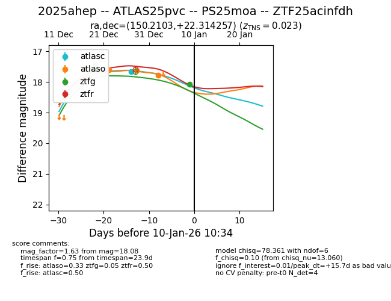
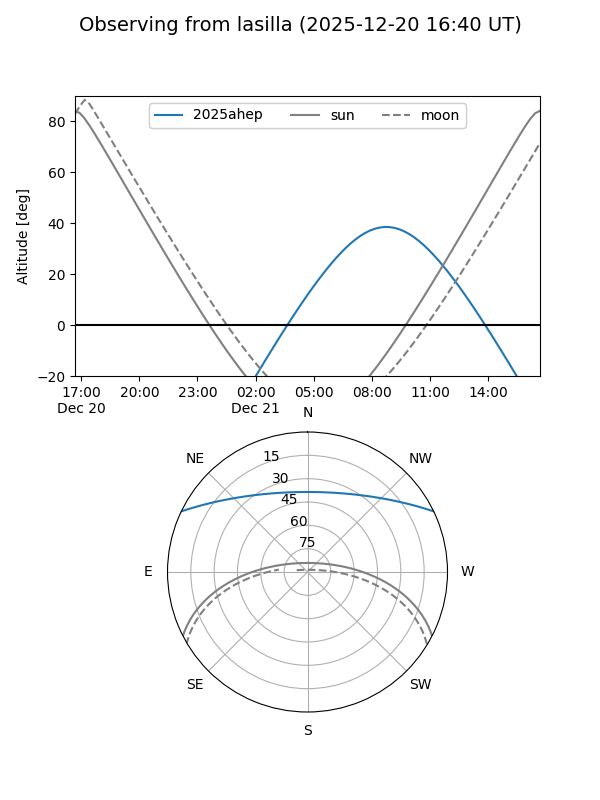
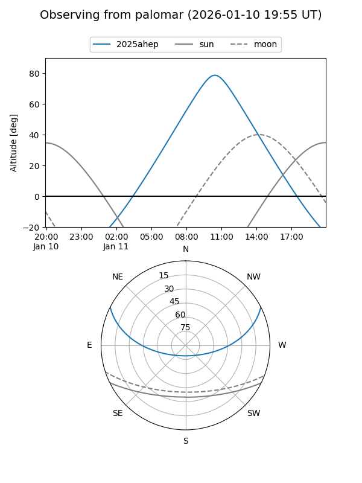
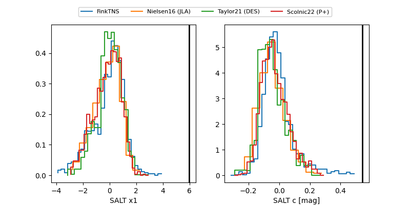

2025ahep
Target 2025ahep at 2025-12-31 18:00
Aliases and brokers:
FINK: link
Lasair: link
ALeRCE: link
TNS: link
YSE: link
alt names
ZTF25acinfdh (ztf,fink_ztf)
2025ahep (tns,yse)
ATLAS25pvc (atlas)
Coordinates:
equatorial (ra, dec) = 150.2103,+22.31426
equatorial (HMS+DMS) = 10:00:50.47,+22:18:51.32
galactic (l, b) = (210.4061,+51.14277)
Flags:
Photometry:
last ztfg=17.45, ztfr=17.62
1 ztfg, 1 ztfr detections
Lightcurve

Visibility


Additional plots
